FIFA 2014
La Copa Mundial de la FIFA Brasil 2014 (en portugués: Copa do Mundo FIFA de 2014) fue la vigésima edición de la Copa Mundial de Fútbol. Se realizó en Brasil entre el 12 de junio y el 13 de julio de 2014, por segunda vez en dicho país, tras el campeonato de 1950.
Después de que el presidente de la FIFA, Joseph Blatter, estableció en 2001 el criterio de rotación continental de la sede del torneo, América del Sur fue seleccionada en 2004 para celebrar en 2014 su primera copa desde Argentina 1978. Pese al entusiasmo inicial de algunos países, solo Brasil y Colombia presentaron sus candidaturas oficiales antes del cierre del plazo, en diciembre de 2006. Algunos meses después, Colombia retiró su candidatura y quedó Brasil como único postulante. El 30 de octubre de 2007, la FIFA lo designó, de manera oficial, como el país sede de la Copa Mundial de Fútbol de 2014.Participaron 202 federaciones afiliadas a FIFA a través de sus equipos representativos, del proceso clasificatorio para determinar las 31 selecciones participantes en el torneo, además del anfitrion.
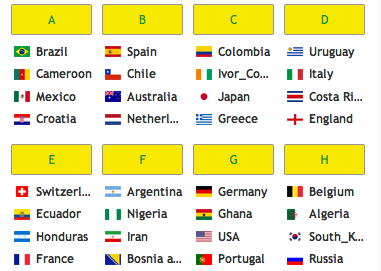
 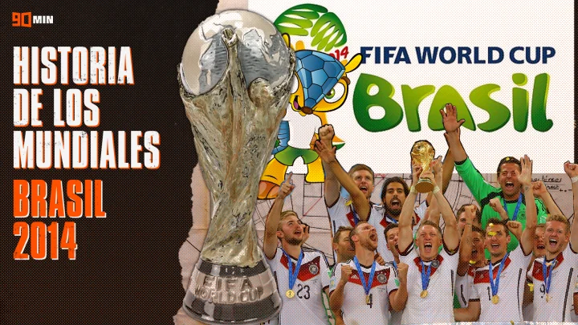
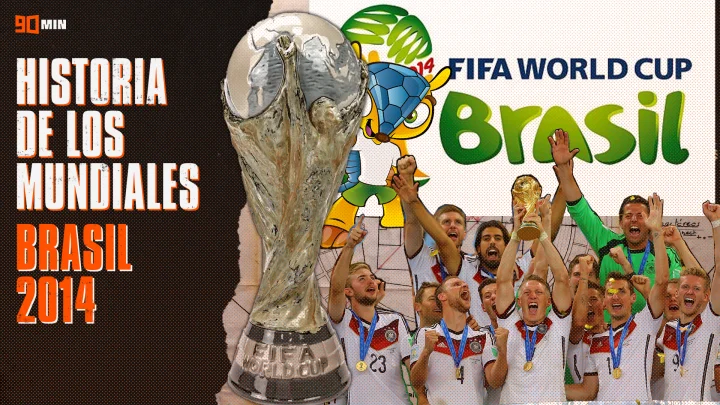
CIUDADES ANFITRIONAS
 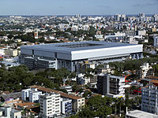
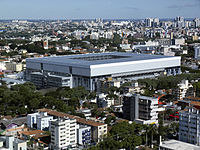
 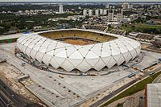
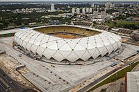
Mato Grosso
Parana
Brasilia
Manaos
De acuerdo con el cronograma de la FIFA, las inscripciones de candidaturas para el torneo se iniciaron el 5 de diciembre de 2006 y finalizaron el 18 de diciembre siguiente. En ese período, Brasil y Colombia presentaron su candidatura, los días 13 y 18, respectivamente; sin embargo, los colombianos finalmente desistieron de sus intenciones, el 11 de abril de 2007. Brasil, como única candidata, fue confirmada el 30 de octubre de 2007 como sede del torneo de 2014.
Sostenibilidad y medio ambiente
Brasil quiso aprovechar la Copa Mundial de Fútbol de 2014 para mostrar su interés por un modelo económico más sostenible y su apuesta por las energías renovables.28 Por ello varios de los estadios donde se celebrarán los eventos deportivos han sido equipados en su cubierta con paneles solares, que ayudarán a cubrir sus necesidades energéticas mediante energía solar fotovoltaica.
A mediados de 2006, de acuerdo con un periódico brasileño, las ciudades de Río de Janeiro, São Paulo, Porto Alegre, Belo Horizonte y Belém serían sin lugar a dudas algunas de las sedes presentadas por la candidatura, mientras que algunas otras ciudades que podrían recibir algunos partidos serían Rio Branco, Brasilia, Curitiba, Florianópolis, Fortaleza, Goiânia, Recife y Salvador de Bahía.
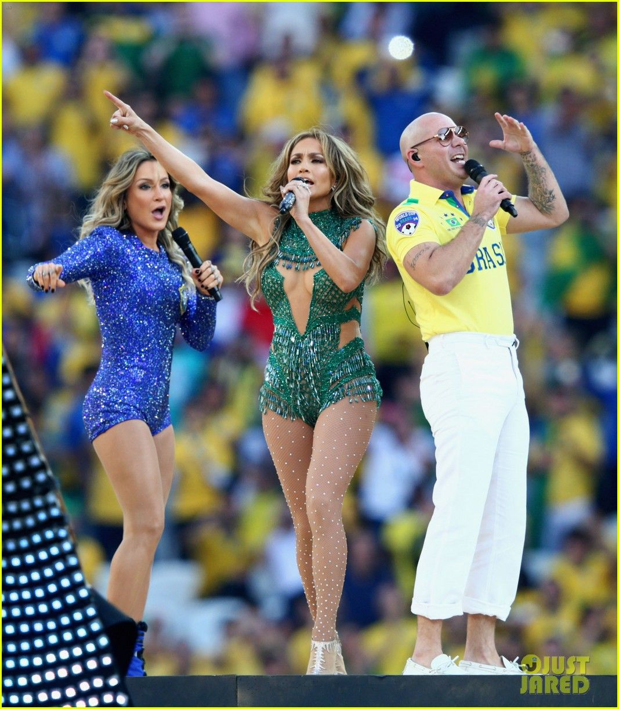

 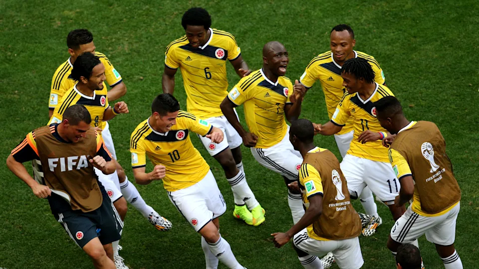
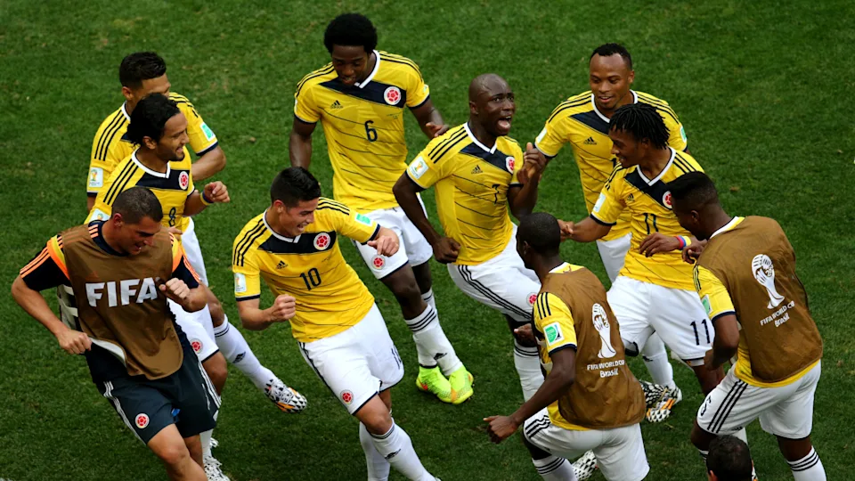
1 Ceremonia de apertura
De izquierda a derecha: Cláudia Leitte, Pitbull y Jennifer Lopez cantando en la ceremonia inaugural.
La ceremonia de apertura se desarrolló durante 25 minutos en el Arena Corinthians de São paulo
2 Fase de grupos
Brasil y Croacia en el primer partido de la Copa Mundial.
La primera fase del torneo se inició con el partido por el Grupo A entre Brasil, la selección anfitriona, y Croacia.
3 El Grupo B fue considerado por algunos expertos como uno de los grupos de la muerte al incluir al campeón y subcampeón vigentes, España y Países Bajos, además de Chile y Australia.
4 Colombia fue el claro líder del Grupo C, derrotando a los tres equipos restantes y clasificando a la segunda ronda. Tras vencer a Japón y perder por un estrecho margen ante la selección colombiana
5 El Grupo D fue otro grupo considerado la muerte al reunir a tres campeones anteriores del torneo: Uruguay, Italia e Inglaterra.
6 En el Grupo E, Francia se alzó como líder del grupo tras sendas victorias ante Honduras y Suiza y un empate en la última fecha ante Ecuador.
7 El Grupo G contó con la presencia de Alemania, Portugal, Ghana y los Estados Unidos. En el primer partido del grupo, Alemania goleó 4:0 a la selección portuguesa gracias en parte a una tripleta de Thomas Müller.
8 Bélgica y Argelia lograron clasificar a la siguiente fase desde el Grupo H. Ambos equipos se enfrentaron en el primer partido del grupo, en el cual los argelinos se mantuvieron en ventaja durante gran parte del encuentro tras un penal en el minuto 20'; sin embargo, los belgas lograron la victoria tras marcar dos goles en los últimos 20 minutos del partido.
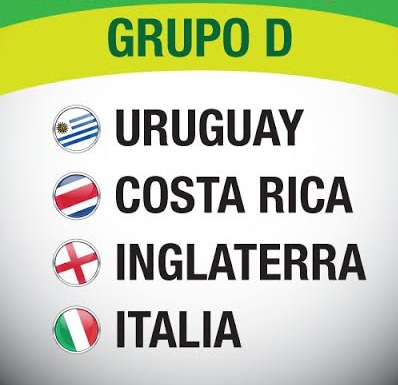
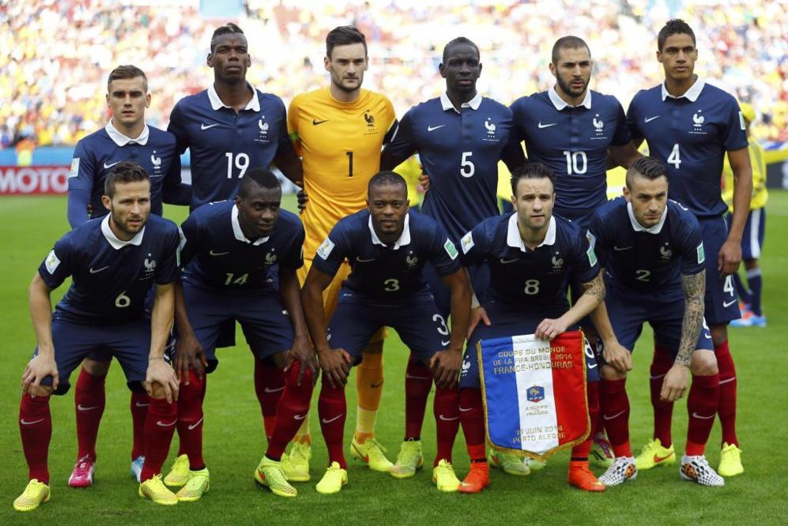
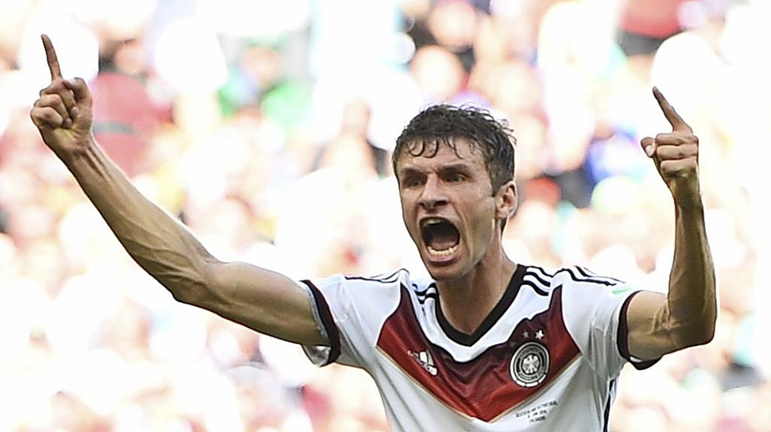
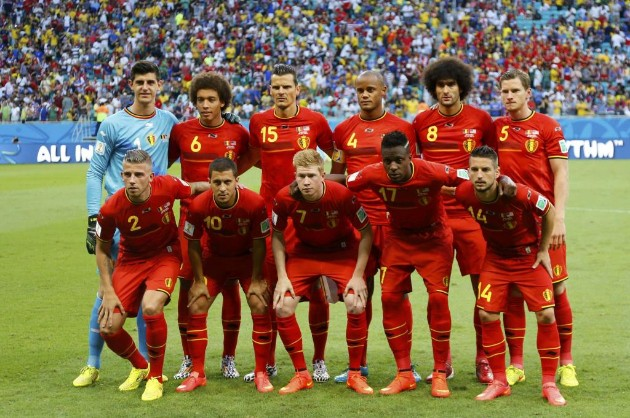
PATROCINADORES
Los Patrocinadores oficiales de la FIFA: Adidas, Coca-Cola, Hyundai, KIA, Emirates, Sony, VISA. Patrocinadores Oficiales del Mundial: Budweiser, Castrol, Continental, Johnson & Johnson, McDonald's, Moy Park, Oi, Yingli. Patrocinadores locales: Apex Brasil, Centauro, Garoto, Itau, Liberty Seguros, Wise Up.
 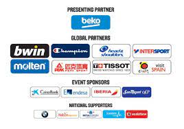
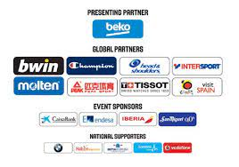